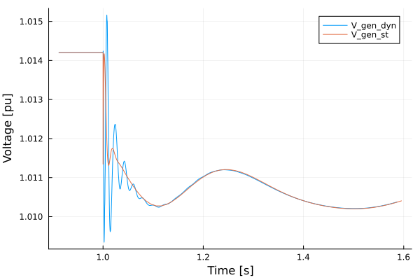

Line Modeling Simulations
Originally Contributed by: Rodrigo Henriquez-Auba and José Daniel Lara
Introduction
This tutorial will introduce an example of considering dynamic lines in PowerSimulationsDynamics.
This tutorial presents a simulation of a three-bus system, with an infinite bus (represented as a voltage source behind an impedance) at bus 1, a one d- one q- machine on bus 2 and an inverter of 19 states, as a virtual synchronous machine at bus 3. The perturbation will be the trip of two of the three circuits (triplicating its resistance and impedance) of the line that connects bus 1 and bus 3. This case also consider a dynamic line model for connection between buses 2 and 3. We will compare it against a system without dynamic lines.
It is recommended to check the OMIB tutorial first, since that includes more details and explanations on all definitions and functions.
Step 1: Package Initialization
julia> using PowerSimulationsDynamicsjulia> using PowerSystemsjulia> using PowerNetworkMatricesjulia> using PowerSystemCaseBuilderjulia> using Sundialsjulia> using Plots
PowerSystemCaseBuilder.jl is a helper library that makes it easier to reproduce examples in the documentation and tutorials. Normally you would pass your local files to create the system data instead of calling the function build_system. For more details visit PowerSystemCaseBuilder Documentation
Step 2: Data creation
Load the system using PowerSystemCaseBuilder.jl:
julia> threebus_sys = build_system(PSIDSystems, "Three Bus Dynamic data Example System")System ┌───────────────────┬─────────────┐ │ Property │ Value │ ├───────────────────┼─────────────┤ │ Name │ │ │ Description │ │ │ System Units Base │ SYSTEM_BASE │ │ Base Power │ 100.0 │ │ Base Frequency │ 60.0 │ │ Num Components │ 19 │ └───────────────────┴─────────────┘ Static Components ┌─────────────────┬───────┬────────────────────────┬───────────────┐ │ Type │ Count │ Has Static Time Series │ Has Forecasts │ ├─────────────────┼───────┼────────────────────────┼───────────────┤ │ ACBus │ 3 │ false │ false │ │ Arc │ 3 │ false │ false │ │ Area │ 1 │ false │ false │ │ Line │ 3 │ false │ false │ │ LoadZone │ 1 │ false │ false │ │ Source │ 1 │ false │ false │ │ StandardLoad │ 3 │ false │ false │ │ ThermalStandard │ 2 │ false │ false │ └─────────────────┴───────┴────────────────────────┴───────────────┘ Dynamic Components ┌──────────────────┬───────┐ │ Type │ Count │ ├──────────────────┼───────┤ │ DynamicGenerator │ 1 │ │ DynamicInverter │ 1 │ └──────────────────┴───────┘
In addition, we will create a new copy of the system on which we will simulate the same case, but will consider dynamic lines:
julia> threebus_sys_dyn = deepcopy(threebus_sys);
Step 3: Create the fault and simulation on the Static Lines system
First, we construct the perturbation, by properly computing the new Ybus on the system:
julia> #Make a copy of the original system sys2 = deepcopy(threebus_sys)System ┌───────────────────┬─────────────┐ │ Property │ Value │ ├───────────────────┼─────────────┤ │ Name │ │ │ Description │ │ │ System Units Base │ SYSTEM_BASE │ │ Base Power │ 100.0 │ │ Base Frequency │ 60.0 │ │ Num Components │ 19 │ └───────────────────┴─────────────┘ Static Components ┌─────────────────┬───────┬────────────────────────┬───────────────┐ │ Type │ Count │ Has Static Time Series │ Has Forecasts │ ├─────────────────┼───────┼────────────────────────┼───────────────┤ │ ACBus │ 3 │ false │ false │ │ Arc │ 3 │ false │ false │ │ Area │ 1 │ false │ false │ │ Line │ 3 │ false │ false │ │ LoadZone │ 1 │ false │ false │ │ Source │ 1 │ false │ false │ │ StandardLoad │ 3 │ false │ false │ │ ThermalStandard │ 2 │ false │ false │ └─────────────────┴───────┴────────────────────────┴───────────────┘ Dynamic Components ┌──────────────────┬───────┐ │ Type │ Count │ ├──────────────────┼───────┤ │ DynamicGenerator │ 1 │ │ DynamicInverter │ 1 │ └──────────────────┴───────┘julia> #Triplicates the impedance of the line named "BUS 1-BUS 3-i_1" fault_branches = get_components(ACBranch, sys2)ACBranch Counts: Line: 3julia> for br in fault_branches if get_name(br) == "BUS 1-BUS 3-i_1" br.r = 3 * br.r br.x = 3 * br.x b_new = (from = br.b.from / 3, to = br.b.to / 3) br.b = b_new end endjulia> #Obtain the new Ybus Ybus_fault = Ybus(sys2).data3×3 SparseArrays.SparseMatrixCSC{ComplexF64, Int64} with 9 stored entries: 0.91954-10.9011im -0.689655+8.27586im -0.229885+2.75862im -0.689655+8.27586im 0.714334-8.78642im -0.0246792+1.11056im -0.229885+2.75862im -0.0246792+1.11056im 0.254564-3.33585imjulia> #Define Fault: Change of YBus Ybus_change = NetworkSwitch( 1.0, #change at t = 1.0 Ybus_fault, #New YBus );
Now, we construct the simulation:
julia> #Time span of our simulation tspan = (0.0, 30.0)(0.0, 30.0)julia> #Define Simulation sim = Simulation( ResidualModel, #Type of model used threebus_sys, #system pwd(), #folder to output results tspan, #time span Ybus_change, #Type of perturbation )┌ Error: ResidualModel failed to build │ exception = │ ArgumentError: get_reactive_power_limits not implemented for Source │ Stacktrace: │ [1] get_reactive_power_limits(#unused#::Source) │ @ PowerSystems ~/.julia/packages/PowerSystems/eHeD3/src/models/supplemental_accessors.jl:63 │ [2] _get_reactive_power_bound!(bus_reactivepower_bounds::Vector{Vector{Float64}}, bus_lookup::Dict{Int64, Int64}, sys::System) │ @ PowerFlows ~/.julia/packages/PowerFlows/2Elwp/src/common.jl:73 │ [3] PowerFlows.PowerFlowData(::PowerFlows.ACPowerFlow, sys::System; timesteps::Int64, timestep_names::Vector{String}, check_connectivity::Bool) │ @ PowerFlows ~/.julia/packages/PowerFlows/2Elwp/src/PowerFlowData.jl:197 │ [4] PowerFlowData │ @ ~/.julia/packages/PowerFlows/2Elwp/src/PowerFlowData.jl:114 [inlined] │ [5] solve_ac_powerflow!(system::System; kwargs::Base.Pairs{Symbol, Union{}, Tuple{}, NamedTuple{(), Tuple{}}}) │ @ PowerFlows ~/.julia/packages/PowerFlows/2Elwp/src/nlsolve_ac_powerflow.jl:39 │ [6] solve_ac_powerflow! │ @ ~/.julia/packages/PowerFlows/2Elwp/src/nlsolve_ac_powerflow.jl:33 [inlined] │ [7] power_flow_solution!(initial_guess::Vector{Float64}, sys::System, inputs::PowerSimulationsDynamics.SimulationInputs) │ @ PowerSimulationsDynamics ~/work/PowerSimulationsDynamics.jl/PowerSimulationsDynamics.jl/src/base/simulation_initialization.jl:14 │ [8] macro expansion │ @ ~/work/PowerSimulationsDynamics.jl/PowerSimulationsDynamics.jl/src/base/simulation_initialization.jl:163 [inlined] │ [9] macro expansion │ @ ~/.julia/packages/TimerOutputs/RsWnF/src/TimerOutput.jl:237 [inlined] │ [10] _calculate_initial_guess!(x0_init::Vector{Float64}, sim::Simulation{ResidualModel}) │ @ PowerSimulationsDynamics ~/work/PowerSimulationsDynamics.jl/PowerSimulationsDynamics.jl/src/base/simulation_initialization.jl:162 │ [11] precalculate_initial_conditions! │ @ ~/work/PowerSimulationsDynamics.jl/PowerSimulationsDynamics.jl/src/base/simulation_initialization.jl:184 [inlined] │ [12] _pre_initialize_simulation!(sim::Simulation{ResidualModel}) │ @ PowerSimulationsDynamics ~/work/PowerSimulationsDynamics.jl/PowerSimulationsDynamics.jl/src/base/simulation.jl:266 │ [13] macro expansion │ @ ~/work/PowerSimulationsDynamics.jl/PowerSimulationsDynamics.jl/src/base/simulation.jl:409 [inlined] │ [14] macro expansion │ @ ~/.julia/packages/TimerOutputs/RsWnF/src/TimerOutput.jl:237 [inlined] │ [15] macro expansion │ @ ~/work/PowerSimulationsDynamics.jl/PowerSimulationsDynamics.jl/src/base/simulation.jl:408 [inlined] │ [16] macro expansion │ @ ~/.julia/packages/TimerOutputs/RsWnF/src/TimerOutput.jl:237 [inlined] │ [17] _build!(sim::Simulation{ResidualModel}; kwargs::Base.Pairs{Symbol, Union{}, Tuple{}, NamedTuple{(), Tuple{}}}) │ @ PowerSimulationsDynamics ~/work/PowerSimulationsDynamics.jl/PowerSimulationsDynamics.jl/src/base/simulation.jl:389 │ [18] _build! │ @ ~/work/PowerSimulationsDynamics.jl/PowerSimulationsDynamics.jl/src/base/simulation.jl:378 [inlined] │ [19] (::PowerSimulationsDynamics.var"#109#110"{Base.Pairs{Symbol, Union{}, Tuple{}, NamedTuple{(), Tuple{}}}, Simulation{ResidualModel}})() │ @ PowerSimulationsDynamics ~/work/PowerSimulationsDynamics.jl/PowerSimulationsDynamics.jl/src/base/simulation.jl:444 │ [20] with_logstate(f::Function, logstate::Any) │ @ Base.CoreLogging ./logging.jl:514 │ [21] with_logger │ @ ./logging.jl:626 [inlined] │ [22] #build!#108 │ @ ~/work/PowerSimulationsDynamics.jl/PowerSimulationsDynamics.jl/src/base/simulation.jl:443 [inlined] │ [23] build! │ @ ~/work/PowerSimulationsDynamics.jl/PowerSimulationsDynamics.jl/src/base/simulation.jl:441 [inlined] │ [24] Simulation(::Type{ResidualModel}, system::System, simulation_folder::String, tspan::Tuple{Float64, Float64}, perturbations::Vector{NetworkSwitch}; kwargs::Base.Pairs{Symbol, Union{}, Tuple{}, NamedTuple{(), Tuple{}}}) │ @ PowerSimulationsDynamics ~/work/PowerSimulationsDynamics.jl/PowerSimulationsDynamics.jl/src/base/simulation.jl:188 │ [25] Simulation │ @ ~/work/PowerSimulationsDynamics.jl/PowerSimulationsDynamics.jl/src/base/simulation.jl:166 [inlined] │ [26] #Simulation#97 │ @ ~/work/PowerSimulationsDynamics.jl/PowerSimulationsDynamics.jl/src/base/simulation.jl:78 [inlined] │ [27] Simulation(::Type{ResidualModel}, system::System, simulation_folder::String, tspan::Tuple{Float64, Float64}, perturbation::NetworkSwitch) │ @ PowerSimulationsDynamics ~/work/PowerSimulationsDynamics.jl/PowerSimulationsDynamics.jl/src/base/simulation.jl:70 │ [28] top-level scope │ @ REPL[2]:1 │ [29] eval │ @ ./boot.jl:370 [inlined] │ [30] #21 │ @ ~/.julia/packages/Documenter/bYYzK/src/Expanders.jl:721 [inlined] │ [31] cd(f::Documenter.Expanders.var"#21#23"{Module}, dir::String) │ @ Base.Filesystem ./file.jl:112 │ [32] (::Documenter.Expanders.var"#20#22"{Documenter.Documents.Page, Module})() │ @ Documenter.Expanders ~/.julia/packages/Documenter/bYYzK/src/Expanders.jl:720 │ [33] (::IOCapture.var"#3#5"{DataType, Documenter.Expanders.var"#20#22"{Documenter.Documents.Page, Module}, Task, IOContext{Base.PipeEndpoint}, IOContext{Base.PipeEndpoint}, IOContext{Base.PipeEndpoint}, IOContext{Base.PipeEndpoint}})() │ @ IOCapture ~/.julia/packages/IOCapture/8Uj7o/src/IOCapture.jl:119 │ [34] with_logstate(f::Function, logstate::Any) │ @ Base.CoreLogging ./logging.jl:514 │ [35] with_logger │ @ ./logging.jl:626 [inlined] │ [36] capture(f::Documenter.Expanders.var"#20#22"{Documenter.Documents.Page, Module}; rethrow::Type, color::Bool) │ @ IOCapture ~/.julia/packages/IOCapture/8Uj7o/src/IOCapture.jl:116 │ [37] runner(#unused#::Type{Documenter.Expanders.REPLBlocks}, x::Markdown.Code, page::Documenter.Documents.Page, doc::Documenter.Documents.Document) │ @ Documenter.Expanders ~/.julia/packages/Documenter/bYYzK/src/Expanders.jl:719 │ [38] dispatch(::Type{Documenter.Expanders.ExpanderPipeline}, ::Markdown.Code, ::Vararg{Any}) │ @ Documenter.Utilities.Selectors ~/.julia/packages/Documenter/bYYzK/src/Utilities/Selectors.jl:170 │ [39] expand(doc::Documenter.Documents.Document) │ @ Documenter.Expanders ~/.julia/packages/Documenter/bYYzK/src/Expanders.jl:42 │ [40] runner(#unused#::Type{Documenter.Builder.ExpandTemplates}, doc::Documenter.Documents.Document) │ @ Documenter.Builder ~/.julia/packages/Documenter/bYYzK/src/Builder.jl:226 │ [41] dispatch(#unused#::Type{Documenter.Builder.DocumentPipeline}, x::Documenter.Documents.Document) │ @ Documenter.Utilities.Selectors ~/.julia/packages/Documenter/bYYzK/src/Utilities/Selectors.jl:170 │ [42] #2 │ @ ~/.julia/packages/Documenter/bYYzK/src/Documenter.jl:273 [inlined] │ [43] cd(f::Documenter.var"#2#3"{Documenter.Documents.Document}, dir::String) │ @ Base.Filesystem ./file.jl:112 │ [44] makedocs(; debug::Bool, format::Documenter.Writers.HTMLWriter.HTML, kwargs::Base.Pairs{Symbol, Any, Tuple{Symbol, Symbol, Symbol}, NamedTuple{(:modules, :sitename, :pages), Tuple{Vector{Module}, String, Vector{Any}}}}) │ @ Documenter ~/.julia/packages/Documenter/bYYzK/src/Documenter.jl:272 │ [45] top-level scope │ @ ~/work/PowerSimulationsDynamics.jl/PowerSimulationsDynamics.jl/docs/make.jl:3 │ [46] include(mod::Module, _path::String) │ @ Base ./Base.jl:457 │ [47] exec_options(opts::Base.JLOptions) │ @ Base ./client.jl:307 │ [48] _start() │ @ Base ./client.jl:522 └ @ PowerSimulationsDynamics ~/work/PowerSimulationsDynamics.jl/PowerSimulationsDynamics.jl/src/base/simulation.jl:434 Simulation Summary ┌─────────────────────────┬────────────────┐ │ Property │ Value │ ├─────────────────────────┼────────────────┤ │ Status │ BUILD_FAILED │ │ Simulation Type │ Residual Model │ │ Initialized? │ No │ │ Multimachine system? │ No │ │ Time Span │ (0.0, 30.0) │ │ Number of States │ 33 │ │ Number of Perturbations │ 1 │ └─────────────────────────┴────────────────┘
We can obtain the initial conditions as:
julia> #Print the initial states. It also give the symbols used to describe those states. show_states_initial_value(sim)Voltage Variables ==================== BUS 1 ==================== Vm 1.0 θ 0.0 ==================== BUS 2 ==================== Vm 1.0 θ 0.0 ==================== BUS 3 ==================== Vm 1.0 θ 0.0 ==================== ==================== Differential States generator-102-1 ==================== eq_p 0.0 ed_p 0.0 δ 0.0 ω 0.0 Vf 0.0 Vr1 0.0 Vr2 0.0 Vm 0.0 ==================== Differential States generator-103-1 ==================== θ_oc 0.0 ω_oc 0.0 q_oc 0.0 ξd_ic 0.0 ξq_ic 0.0 γd_ic 0.0 γq_ic 0.0 ϕd_ic 0.0 ϕq_ic 0.0 vd_pll 0.0 vq_pll 0.0 ε_pll 0.0 θ_pll 0.0 ir_cnv 0.0 ii_cnv 0.0 vr_filter 0.0 vi_filter 0.0 ir_filter 0.0 ii_filter 0.0 ====================
Step 4: Run the simulation of the Static Lines System
julia> #Run the simulation execute!( sim, #simulation structure IDA(), #Sundials DAE Solver dtmax = 0.02, #Maximum step size )┌ Error: Execution failed │ exception = │ The Simulation status is BUILD_FAILED. Can not continue, correct your inputs and build the simulation again. │ Stacktrace: │ [1] error(s::String) │ @ Base ./error.jl:35 │ [2] simulation_pre_step!(sim::Simulation{ResidualModel}) │ @ PowerSimulationsDynamics ~/work/PowerSimulationsDynamics.jl/PowerSimulationsDynamics.jl/src/base/simulation.jl:462 │ [3] _execute!(sim::Simulation{ResidualModel}, solver::Sundials.IDA{:Dense, Nothing, Nothing}; kwargs::Base.Pairs{Symbol, Float64, Tuple{Symbol}, NamedTuple{(:dtmax,), Tuple{Float64}}}) │ @ PowerSimulationsDynamics ~/work/PowerSimulationsDynamics.jl/PowerSimulationsDynamics.jl/src/base/simulation.jl:488 │ [4] _execute! │ @ ~/work/PowerSimulationsDynamics.jl/PowerSimulationsDynamics.jl/src/base/simulation.jl:486 [inlined] │ [5] (::PowerSimulationsDynamics.var"#117#118"{Base.Pairs{Symbol, Float64, Tuple{Symbol}, NamedTuple{(:dtmax,), Tuple{Float64}}}, Simulation{ResidualModel}, Sundials.IDA{:Dense, Nothing, Nothing}})() │ @ PowerSimulationsDynamics ~/work/PowerSimulationsDynamics.jl/PowerSimulationsDynamics.jl/src/base/simulation.jl:545 │ [6] with_logstate(f::Function, logstate::Any) │ @ Base.CoreLogging ./logging.jl:514 │ [7] with_logger │ @ ./logging.jl:626 [inlined] │ [8] #execute!#116 │ @ ~/work/PowerSimulationsDynamics.jl/PowerSimulationsDynamics.jl/src/base/simulation.jl:543 [inlined] │ [9] top-level scope │ @ REPL[1]:1 │ [10] eval │ @ ./boot.jl:370 [inlined] │ [11] #21 │ @ ~/.julia/packages/Documenter/bYYzK/src/Expanders.jl:721 [inlined] │ [12] cd(f::Documenter.Expanders.var"#21#23"{Module}, dir::String) │ @ Base.Filesystem ./file.jl:112 │ [13] (::Documenter.Expanders.var"#20#22"{Documenter.Documents.Page, Module})() │ @ Documenter.Expanders ~/.julia/packages/Documenter/bYYzK/src/Expanders.jl:720 │ [14] (::IOCapture.var"#3#5"{DataType, Documenter.Expanders.var"#20#22"{Documenter.Documents.Page, Module}, Task, IOContext{Base.PipeEndpoint}, IOContext{Base.PipeEndpoint}, IOContext{Base.PipeEndpoint}, IOContext{Base.PipeEndpoint}})() │ @ IOCapture ~/.julia/packages/IOCapture/8Uj7o/src/IOCapture.jl:119 │ [15] with_logstate(f::Function, logstate::Any) │ @ Base.CoreLogging ./logging.jl:514 │ [16] with_logger │ @ ./logging.jl:626 [inlined] │ [17] capture(f::Documenter.Expanders.var"#20#22"{Documenter.Documents.Page, Module}; rethrow::Type, color::Bool) │ @ IOCapture ~/.julia/packages/IOCapture/8Uj7o/src/IOCapture.jl:116 │ [18] runner(#unused#::Type{Documenter.Expanders.REPLBlocks}, x::Markdown.Code, page::Documenter.Documents.Page, doc::Documenter.Documents.Document) │ @ Documenter.Expanders ~/.julia/packages/Documenter/bYYzK/src/Expanders.jl:719 │ [19] dispatch(::Type{Documenter.Expanders.ExpanderPipeline}, ::Markdown.Code, ::Vararg{Any}) │ @ Documenter.Utilities.Selectors ~/.julia/packages/Documenter/bYYzK/src/Utilities/Selectors.jl:170 │ [20] expand(doc::Documenter.Documents.Document) │ @ Documenter.Expanders ~/.julia/packages/Documenter/bYYzK/src/Expanders.jl:42 │ [21] runner(#unused#::Type{Documenter.Builder.ExpandTemplates}, doc::Documenter.Documents.Document) │ @ Documenter.Builder ~/.julia/packages/Documenter/bYYzK/src/Builder.jl:226 │ [22] dispatch(#unused#::Type{Documenter.Builder.DocumentPipeline}, x::Documenter.Documents.Document) │ @ Documenter.Utilities.Selectors ~/.julia/packages/Documenter/bYYzK/src/Utilities/Selectors.jl:170 │ [23] #2 │ @ ~/.julia/packages/Documenter/bYYzK/src/Documenter.jl:273 [inlined] │ [24] cd(f::Documenter.var"#2#3"{Documenter.Documents.Document}, dir::String) │ @ Base.Filesystem ./file.jl:112 │ [25] makedocs(; debug::Bool, format::Documenter.Writers.HTMLWriter.HTML, kwargs::Base.Pairs{Symbol, Any, Tuple{Symbol, Symbol, Symbol}, NamedTuple{(:modules, :sitename, :pages), Tuple{Vector{Module}, String, Vector{Any}}}}) │ @ Documenter ~/.julia/packages/Documenter/bYYzK/src/Documenter.jl:272 │ [26] top-level scope │ @ ~/work/PowerSimulationsDynamics.jl/PowerSimulationsDynamics.jl/docs/make.jl:3 │ [27] include(mod::Module, _path::String) │ @ Base ./Base.jl:457 │ [28] exec_options(opts::Base.JLOptions) │ @ Base ./client.jl:307 │ [29] _start() │ @ Base ./client.jl:522 └ @ PowerSimulationsDynamics ~/work/PowerSimulationsDynamics.jl/PowerSimulationsDynamics.jl/src/base/simulation.jl:547 SIMULATION_FAILED::BUILD_STATUS = 7
Step 5: Store the solution
julia> results = read_results(sim)julia> series2 = get_voltage_magnitude_series(results, 102)ERROR: MethodError: no method matching get_voltage_magnitude_series(::Nothing, ::Int64) Closest candidates are: get_voltage_magnitude_series(!Matched::SimulationResults, ::Int64; dt) @ PowerSimulationsDynamics ~/work/PowerSimulationsDynamics.jl/PowerSimulationsDynamics.jl/src/base/simulation_results.jl:321julia> zoom = [ (series2[1][ix], series2[2][ix]) for (ix, s) in enumerate(series2[1]) if (s > 0.90 && s < 1.6) ];ERROR: UndefVarError: `series2` not defined
Step 3.1: Create the fault and simulation on the Dynamic Lines system
An important aspect to consider is that DynamicLines must not be considered in the computation of the Ybus. First we construct the Dynamic Line, by finding the Line named "BUS 2-BUS 3-i_1", and then adding it to the system.
julia> # get component return the Branch on threebus_sys_dyn named "BUS 2-BUS 3-i_1" dyn_branch = DynamicBranch(get_component(Line, threebus_sys_dyn,"BUS 2-BUS 3-i_1"))BUS 2-BUS 3-i_1 (DynamicBranch): branch: BUS 2-BUS 3-i_1 (Line) n_states: 2 states: [:Il_R, :Il_I] internal: InfrastructureSystems.InfrastructureSystemsInternaljulia> # Adding a dynamic line will immediately remove the static line from the system. add_component!(threebus_sys_dyn, dyn_branch)
Similarly, we construct the Ybus fault by creating a copy of the original system, but removing the Line "BUS 2-BUS 3-i_1" to avoid considering it in the Ybus:
julia> #Make a copy of the original system sys3 = deepcopy(threebus_sys);julia> #Remove Line "BUS 2-BUS 3-i_1" remove_component!(Line, sys3, "BUS 2-BUS 3-i_1")julia> #Triplicates the impedance of the line named "BUS 1-BUS 2-i_1" fault_branches2 = get_components(Line, sys3)Line Counts: Line: 2julia> for br in fault_branches2 if get_name(br) == "BUS 1-BUS 3-i_1" br.r = 3 * br.r br.x = 3 * br.x b_new = (from = br.b.from / 3, to = br.b.to / 3) br.b = b_new end endjulia> #Obtain the new Ybus Ybus_fault_dyn = Ybus(sys3).data3×3 SparseArrays.SparseMatrixCSC{ComplexF64, Int64} with 7 stored entries: 0.91954-10.9011im -0.689655+8.27586im -0.229885+2.75862im -0.689655+8.27586im 0.689655-8.17586im ⋅ -0.229885+2.75862im ⋅ 0.229885-2.72529imjulia> #Define Fault: Change of YBus Ybus_change_dyn = NetworkSwitch( 1.0, #change at t = 1.0 Ybus_fault_dyn, #New YBus )NetworkSwitch(1.0, sparse([1, 2, 3, 4, 5, 6, 1, 2, 4, 5 … 5, 6, 1, 2, 4, 5, 1, 3, 4, 6], [1, 1, 1, 1, 1, 1, 2, 2, 2, 2, 3, 3, 3, 3, 4, 4, 4, 4, 4, 4, 5, 5, 5, 5, 6, 6, 6, 6], [0.9195402298850576, -0.6896551724137931, -0.2298850574712644, 10.901149425287358, -8.275862068965518, -2.7586206896551726, -0.6896551724137931, 0.6896551724137931, -8.275862068965518, 8.175862068965518 … -0.6896551724137931, -0.2298850574712644, 8.275862068965518, -8.175862068965518, -0.6896551724137931, 0.6896551724137931, 2.7586206896551726, -2.7252873563218394, -0.2298850574712644, 0.2298850574712644], 6, 6))
Step 4.1: Run the simulation of the Dynamic Lines System
Now, we construct the simulation:
julia> # Define Simulation sim_dyn = Simulation( ResidualModel, #Type of model used threebus_sys_dyn, #system pwd(), #folder to output results (0.0, 30.0), #time span Ybus_change_dyn, #Type of perturbation )┌ Error: ResidualModel failed to build │ exception = │ ArgumentError: get_reactive_power_limits not implemented for Source │ Stacktrace: │ [1] get_reactive_power_limits(#unused#::Source) │ @ PowerSystems ~/.julia/packages/PowerSystems/eHeD3/src/models/supplemental_accessors.jl:63 │ [2] _get_reactive_power_bound!(bus_reactivepower_bounds::Vector{Vector{Float64}}, bus_lookup::Dict{Int64, Int64}, sys::System) │ @ PowerFlows ~/.julia/packages/PowerFlows/2Elwp/src/common.jl:73 │ [3] PowerFlows.PowerFlowData(::PowerFlows.ACPowerFlow, sys::System; timesteps::Int64, timestep_names::Vector{String}, check_connectivity::Bool) │ @ PowerFlows ~/.julia/packages/PowerFlows/2Elwp/src/PowerFlowData.jl:197 │ [4] PowerFlowData │ @ ~/.julia/packages/PowerFlows/2Elwp/src/PowerFlowData.jl:114 [inlined] │ [5] solve_ac_powerflow!(system::System; kwargs::Base.Pairs{Symbol, Union{}, Tuple{}, NamedTuple{(), Tuple{}}}) │ @ PowerFlows ~/.julia/packages/PowerFlows/2Elwp/src/nlsolve_ac_powerflow.jl:39 │ [6] solve_ac_powerflow! │ @ ~/.julia/packages/PowerFlows/2Elwp/src/nlsolve_ac_powerflow.jl:33 [inlined] │ [7] power_flow_solution!(initial_guess::Vector{Float64}, sys::System, inputs::PowerSimulationsDynamics.SimulationInputs) │ @ PowerSimulationsDynamics ~/work/PowerSimulationsDynamics.jl/PowerSimulationsDynamics.jl/src/base/simulation_initialization.jl:14 │ [8] macro expansion │ @ ~/work/PowerSimulationsDynamics.jl/PowerSimulationsDynamics.jl/src/base/simulation_initialization.jl:163 [inlined] │ [9] macro expansion │ @ ~/.julia/packages/TimerOutputs/RsWnF/src/TimerOutput.jl:237 [inlined] │ [10] _calculate_initial_guess!(x0_init::Vector{Float64}, sim::Simulation{ResidualModel}) │ @ PowerSimulationsDynamics ~/work/PowerSimulationsDynamics.jl/PowerSimulationsDynamics.jl/src/base/simulation_initialization.jl:162 │ [11] precalculate_initial_conditions! │ @ ~/work/PowerSimulationsDynamics.jl/PowerSimulationsDynamics.jl/src/base/simulation_initialization.jl:184 [inlined] │ [12] _pre_initialize_simulation!(sim::Simulation{ResidualModel}) │ @ PowerSimulationsDynamics ~/work/PowerSimulationsDynamics.jl/PowerSimulationsDynamics.jl/src/base/simulation.jl:266 │ [13] macro expansion │ @ ~/work/PowerSimulationsDynamics.jl/PowerSimulationsDynamics.jl/src/base/simulation.jl:409 [inlined] │ [14] macro expansion │ @ ~/.julia/packages/TimerOutputs/RsWnF/src/TimerOutput.jl:237 [inlined] │ [15] macro expansion │ @ ~/work/PowerSimulationsDynamics.jl/PowerSimulationsDynamics.jl/src/base/simulation.jl:408 [inlined] │ [16] macro expansion │ @ ~/.julia/packages/TimerOutputs/RsWnF/src/TimerOutput.jl:237 [inlined] │ [17] _build!(sim::Simulation{ResidualModel}; kwargs::Base.Pairs{Symbol, Union{}, Tuple{}, NamedTuple{(), Tuple{}}}) │ @ PowerSimulationsDynamics ~/work/PowerSimulationsDynamics.jl/PowerSimulationsDynamics.jl/src/base/simulation.jl:389 │ [18] _build! │ @ ~/work/PowerSimulationsDynamics.jl/PowerSimulationsDynamics.jl/src/base/simulation.jl:378 [inlined] │ [19] (::PowerSimulationsDynamics.var"#109#110"{Base.Pairs{Symbol, Union{}, Tuple{}, NamedTuple{(), Tuple{}}}, Simulation{ResidualModel}})() │ @ PowerSimulationsDynamics ~/work/PowerSimulationsDynamics.jl/PowerSimulationsDynamics.jl/src/base/simulation.jl:444 │ [20] with_logstate(f::Function, logstate::Any) │ @ Base.CoreLogging ./logging.jl:514 │ [21] with_logger │ @ ./logging.jl:626 [inlined] │ [22] #build!#108 │ @ ~/work/PowerSimulationsDynamics.jl/PowerSimulationsDynamics.jl/src/base/simulation.jl:443 [inlined] │ [23] build! │ @ ~/work/PowerSimulationsDynamics.jl/PowerSimulationsDynamics.jl/src/base/simulation.jl:441 [inlined] │ [24] Simulation(::Type{ResidualModel}, system::System, simulation_folder::String, tspan::Tuple{Float64, Float64}, perturbations::Vector{NetworkSwitch}; kwargs::Base.Pairs{Symbol, Union{}, Tuple{}, NamedTuple{(), Tuple{}}}) │ @ PowerSimulationsDynamics ~/work/PowerSimulationsDynamics.jl/PowerSimulationsDynamics.jl/src/base/simulation.jl:188 │ [25] Simulation │ @ ~/work/PowerSimulationsDynamics.jl/PowerSimulationsDynamics.jl/src/base/simulation.jl:166 [inlined] │ [26] #Simulation#97 │ @ ~/work/PowerSimulationsDynamics.jl/PowerSimulationsDynamics.jl/src/base/simulation.jl:78 [inlined] │ [27] Simulation(::Type{ResidualModel}, system::System, simulation_folder::String, tspan::Tuple{Float64, Float64}, perturbation::NetworkSwitch) │ @ PowerSimulationsDynamics ~/work/PowerSimulationsDynamics.jl/PowerSimulationsDynamics.jl/src/base/simulation.jl:70 │ [28] top-level scope │ @ REPL[1]:1 │ [29] eval │ @ ./boot.jl:370 [inlined] │ [30] #21 │ @ ~/.julia/packages/Documenter/bYYzK/src/Expanders.jl:721 [inlined] │ [31] cd(f::Documenter.Expanders.var"#21#23"{Module}, dir::String) │ @ Base.Filesystem ./file.jl:112 │ [32] (::Documenter.Expanders.var"#20#22"{Documenter.Documents.Page, Module})() │ @ Documenter.Expanders ~/.julia/packages/Documenter/bYYzK/src/Expanders.jl:720 │ [33] (::IOCapture.var"#3#5"{DataType, Documenter.Expanders.var"#20#22"{Documenter.Documents.Page, Module}, Task, IOContext{Base.PipeEndpoint}, IOContext{Base.PipeEndpoint}, IOContext{Base.PipeEndpoint}, IOContext{Base.PipeEndpoint}})() │ @ IOCapture ~/.julia/packages/IOCapture/8Uj7o/src/IOCapture.jl:119 │ [34] with_logstate(f::Function, logstate::Any) │ @ Base.CoreLogging ./logging.jl:514 │ [35] with_logger │ @ ./logging.jl:626 [inlined] │ [36] capture(f::Documenter.Expanders.var"#20#22"{Documenter.Documents.Page, Module}; rethrow::Type, color::Bool) │ @ IOCapture ~/.julia/packages/IOCapture/8Uj7o/src/IOCapture.jl:116 │ [37] runner(#unused#::Type{Documenter.Expanders.REPLBlocks}, x::Markdown.Code, page::Documenter.Documents.Page, doc::Documenter.Documents.Document) │ @ Documenter.Expanders ~/.julia/packages/Documenter/bYYzK/src/Expanders.jl:719 │ [38] dispatch(::Type{Documenter.Expanders.ExpanderPipeline}, ::Markdown.Code, ::Vararg{Any}) │ @ Documenter.Utilities.Selectors ~/.julia/packages/Documenter/bYYzK/src/Utilities/Selectors.jl:170 │ [39] expand(doc::Documenter.Documents.Document) │ @ Documenter.Expanders ~/.julia/packages/Documenter/bYYzK/src/Expanders.jl:42 │ [40] runner(#unused#::Type{Documenter.Builder.ExpandTemplates}, doc::Documenter.Documents.Document) │ @ Documenter.Builder ~/.julia/packages/Documenter/bYYzK/src/Builder.jl:226 │ [41] dispatch(#unused#::Type{Documenter.Builder.DocumentPipeline}, x::Documenter.Documents.Document) │ @ Documenter.Utilities.Selectors ~/.julia/packages/Documenter/bYYzK/src/Utilities/Selectors.jl:170 │ [42] #2 │ @ ~/.julia/packages/Documenter/bYYzK/src/Documenter.jl:273 [inlined] │ [43] cd(f::Documenter.var"#2#3"{Documenter.Documents.Document}, dir::String) │ @ Base.Filesystem ./file.jl:112 │ [44] makedocs(; debug::Bool, format::Documenter.Writers.HTMLWriter.HTML, kwargs::Base.Pairs{Symbol, Any, Tuple{Symbol, Symbol, Symbol}, NamedTuple{(:modules, :sitename, :pages), Tuple{Vector{Module}, String, Vector{Any}}}}) │ @ Documenter ~/.julia/packages/Documenter/bYYzK/src/Documenter.jl:272 │ [45] top-level scope │ @ ~/work/PowerSimulationsDynamics.jl/PowerSimulationsDynamics.jl/docs/make.jl:3 │ [46] include(mod::Module, _path::String) │ @ Base ./Base.jl:457 │ [47] exec_options(opts::Base.JLOptions) │ @ Base ./client.jl:307 │ [48] _start() │ @ Base ./client.jl:522 └ @ PowerSimulationsDynamics ~/work/PowerSimulationsDynamics.jl/PowerSimulationsDynamics.jl/src/base/simulation.jl:434 Simulation Summary ┌─────────────────────────┬────────────────┐ │ Property │ Value │ ├─────────────────────────┼────────────────┤ │ Status │ BUILD_FAILED │ │ Simulation Type │ Residual Model │ │ Initialized? │ No │ │ Multimachine system? │ No │ │ Time Span │ (0.0, 30.0) │ │ Number of States │ 35 │ │ Number of Perturbations │ 1 │ └─────────────────────────┴────────────────┘
julia> # Run the simulation execute!( sim_dyn, #simulation structure IDA(), #Sundials DAE Solver dtmax = 0.02, #Maximum step size )┌ Error: Execution failed │ exception = │ The Simulation status is BUILD_FAILED. Can not continue, correct your inputs and build the simulation again. │ Stacktrace: │ [1] error(s::String) │ @ Base ./error.jl:35 │ [2] simulation_pre_step!(sim::Simulation{ResidualModel}) │ @ PowerSimulationsDynamics ~/work/PowerSimulationsDynamics.jl/PowerSimulationsDynamics.jl/src/base/simulation.jl:462 │ [3] _execute!(sim::Simulation{ResidualModel}, solver::Sundials.IDA{:Dense, Nothing, Nothing}; kwargs::Base.Pairs{Symbol, Float64, Tuple{Symbol}, NamedTuple{(:dtmax,), Tuple{Float64}}}) │ @ PowerSimulationsDynamics ~/work/PowerSimulationsDynamics.jl/PowerSimulationsDynamics.jl/src/base/simulation.jl:488 │ [4] _execute! │ @ ~/work/PowerSimulationsDynamics.jl/PowerSimulationsDynamics.jl/src/base/simulation.jl:486 [inlined] │ [5] (::PowerSimulationsDynamics.var"#117#118"{Base.Pairs{Symbol, Float64, Tuple{Symbol}, NamedTuple{(:dtmax,), Tuple{Float64}}}, Simulation{ResidualModel}, Sundials.IDA{:Dense, Nothing, Nothing}})() │ @ PowerSimulationsDynamics ~/work/PowerSimulationsDynamics.jl/PowerSimulationsDynamics.jl/src/base/simulation.jl:545 │ [6] with_logstate(f::Function, logstate::Any) │ @ Base.CoreLogging ./logging.jl:514 │ [7] with_logger │ @ ./logging.jl:626 [inlined] │ [8] #execute!#116 │ @ ~/work/PowerSimulationsDynamics.jl/PowerSimulationsDynamics.jl/src/base/simulation.jl:543 [inlined] │ [9] top-level scope │ @ REPL[1]:1 │ [10] eval │ @ ./boot.jl:370 [inlined] │ [11] #21 │ @ ~/.julia/packages/Documenter/bYYzK/src/Expanders.jl:721 [inlined] │ [12] cd(f::Documenter.Expanders.var"#21#23"{Module}, dir::String) │ @ Base.Filesystem ./file.jl:112 │ [13] (::Documenter.Expanders.var"#20#22"{Documenter.Documents.Page, Module})() │ @ Documenter.Expanders ~/.julia/packages/Documenter/bYYzK/src/Expanders.jl:720 │ [14] (::IOCapture.var"#3#5"{DataType, Documenter.Expanders.var"#20#22"{Documenter.Documents.Page, Module}, Task, IOContext{Base.PipeEndpoint}, IOContext{Base.PipeEndpoint}, IOContext{Base.PipeEndpoint}, IOContext{Base.PipeEndpoint}})() │ @ IOCapture ~/.julia/packages/IOCapture/8Uj7o/src/IOCapture.jl:119 │ [15] with_logstate(f::Function, logstate::Any) │ @ Base.CoreLogging ./logging.jl:514 │ [16] with_logger │ @ ./logging.jl:626 [inlined] │ [17] capture(f::Documenter.Expanders.var"#20#22"{Documenter.Documents.Page, Module}; rethrow::Type, color::Bool) │ @ IOCapture ~/.julia/packages/IOCapture/8Uj7o/src/IOCapture.jl:116 │ [18] runner(#unused#::Type{Documenter.Expanders.REPLBlocks}, x::Markdown.Code, page::Documenter.Documents.Page, doc::Documenter.Documents.Document) │ @ Documenter.Expanders ~/.julia/packages/Documenter/bYYzK/src/Expanders.jl:719 │ [19] dispatch(::Type{Documenter.Expanders.ExpanderPipeline}, ::Markdown.Code, ::Vararg{Any}) │ @ Documenter.Utilities.Selectors ~/.julia/packages/Documenter/bYYzK/src/Utilities/Selectors.jl:170 │ [20] expand(doc::Documenter.Documents.Document) │ @ Documenter.Expanders ~/.julia/packages/Documenter/bYYzK/src/Expanders.jl:42 │ [21] runner(#unused#::Type{Documenter.Builder.ExpandTemplates}, doc::Documenter.Documents.Document) │ @ Documenter.Builder ~/.julia/packages/Documenter/bYYzK/src/Builder.jl:226 │ [22] dispatch(#unused#::Type{Documenter.Builder.DocumentPipeline}, x::Documenter.Documents.Document) │ @ Documenter.Utilities.Selectors ~/.julia/packages/Documenter/bYYzK/src/Utilities/Selectors.jl:170 │ [23] #2 │ @ ~/.julia/packages/Documenter/bYYzK/src/Documenter.jl:273 [inlined] │ [24] cd(f::Documenter.var"#2#3"{Documenter.Documents.Document}, dir::String) │ @ Base.Filesystem ./file.jl:112 │ [25] makedocs(; debug::Bool, format::Documenter.Writers.HTMLWriter.HTML, kwargs::Base.Pairs{Symbol, Any, Tuple{Symbol, Symbol, Symbol}, NamedTuple{(:modules, :sitename, :pages), Tuple{Vector{Module}, String, Vector{Any}}}}) │ @ Documenter ~/.julia/packages/Documenter/bYYzK/src/Documenter.jl:272 │ [26] top-level scope │ @ ~/work/PowerSimulationsDynamics.jl/PowerSimulationsDynamics.jl/docs/make.jl:3 │ [27] include(mod::Module, _path::String) │ @ Base ./Base.jl:457 │ [28] exec_options(opts::Base.JLOptions) │ @ Base ./client.jl:307 │ [29] _start() │ @ Base ./client.jl:522 └ @ PowerSimulationsDynamics ~/work/PowerSimulationsDynamics.jl/PowerSimulationsDynamics.jl/src/base/simulation.jl:547 SIMULATION_FAILED::BUILD_STATUS = 7
We can obtain the initial conditions as:
julia> #Print the initial states. It also give the symbols used to describe those states. show_states_initial_value(sim_dyn)Voltage Variables ==================== BUS 1 ==================== Vm 1.0 θ 0.0 ==================== BUS 2 ==================== Vm 1.0 θ 0.0 ==================== BUS 3 ==================== Vm 1.0 θ 0.0 ==================== ==================== Differential States generator-102-1 ==================== eq_p 0.0 ed_p 0.0 δ 0.0 ω 0.0 Vf 0.0 Vr1 0.0 Vr2 0.0 Vm 0.0 ==================== Differential States generator-103-1 ==================== θ_oc 0.0 ω_oc 0.0 q_oc 0.0 ξd_ic 0.0 ξq_ic 0.0 γd_ic 0.0 γq_ic 0.0 ϕd_ic 0.0 ϕq_ic 0.0 vd_pll 0.0 vq_pll 0.0 ε_pll 0.0 θ_pll 0.0 ir_cnv 0.0 ii_cnv 0.0 vr_filter 0.0 vi_filter 0.0 ir_filter 0.0 ii_filter 0.0 ==================== ==================== Line Current States ==================== Line BUS 2-BUS 3-i_1 Il_R 0.0 Il_I 0.0 ====================
Step 5.1: Store the solution
julia> results_dyn = read_results(sim_dyn)julia> series2_dyn = get_voltage_magnitude_series(results_dyn, 102);ERROR: MethodError: no method matching get_voltage_magnitude_series(::Nothing, ::Int64) Closest candidates are: get_voltage_magnitude_series(!Matched::SimulationResults, ::Int64; dt) @ PowerSimulationsDynamics ~/work/PowerSimulationsDynamics.jl/PowerSimulationsDynamics.jl/src/base/simulation_results.jl:321julia> zoom_dyn = [ (series2_dyn[1][ix], series2_dyn[2][ix]) for (ix, s) in enumerate(series2_dyn[1]) if (s > 0.90 && s < 1.6) ];ERROR: UndefVarError: `series2_dyn` not defined
Step 6.1: Compare the solutions:
We can observe the effect of Dynamic Lines
julia> plot(series2_dyn, label = "V_gen_dyn");ERROR: UndefVarError: `series2_dyn` not definedjulia> plot!(series2, label = "V_gen_st", xlabel = "Time [s]", ylabel = "Voltage [pu]");ERROR: UndefVarError: `series2` not defined

that looks quite similar. The differences can be observed in the zoom plot:
julia> plot(zoom_dyn, label = "V_gen_dyn");ERROR: UndefVarError: `zoom_dyn` not definedjulia> plot!(zoom, label = "V_gen_st", xlabel = "Time [s]", ylabel = "Voltage [pu]");ERROR: UndefVarError: `zoom` not defined
